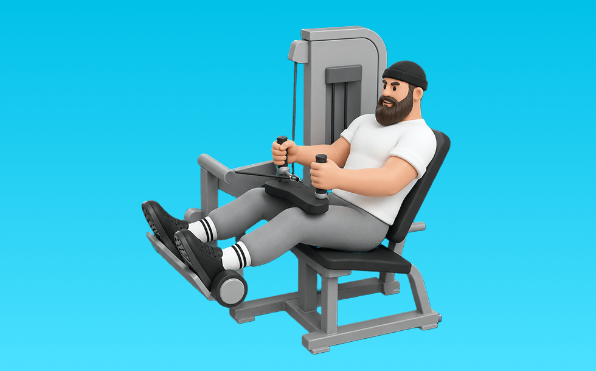

シーテッドレッグカール

ハムストリングカール(シーテッド)とは、マシンを使って「膝を曲げる」動作で太もも裏（ハムストリング）を鍛える種目です。軌道が安定して狙った部位に効かせやすいのが特徴で、かかとを引き寄せて収縮し、ゆっくり戻す動作を繰り返します。下半身の筋力・筋量アップが期待できます。
- 対象部位
- 脚
- 器具
- マシン
- 記録形式
- 重量・回数
- 別名
- レッグカール
YouTube動画
-
【美脚を作る】シーテッドレッグカール！【筋トレ】
-
【見栄えが変わる】フィジーク選手に欠かせない“ハム&内転筋狙い”のレッグカール。
-
【ジムトレ】レッグカールの基本の使い方徹底解説〜もも裏に効かせるポイント・初心者おすすめ〜
-
【ボディメイクチャンピオン指導】レッグプレスの効果が出るやり方＆応用！フォームまで徹底攻略！ 5分
-
レッグプレスで超美尻！お尻だけにピンポイントで効かせるテクニックがヤバすぎた
-
レッグカール基礎編使い方
-
レッグプレスのフォーム解説！膝・腰に負担をかけないフォームはコレだ！
-
【これ観れば全て解決】SGIRの脚トレ５種目。実演＆各種ポイント付き
YouTubeショート
-
シーテッドレッグカールの取扱説明書
-
【SGIR】レッグカールのポイント
-
【1分でわかる】レッグカールの使い方 #筋トレ #筋肉 #トレーニング #ジム #脚トレ #美脚
-
【藍住店】シーテッドレッグカール 使い方動画
-
[SYNERGY. Fitness Studio] レッグカールのやり方 #筋トレ #エクササイズ
-
【万代店】シーテッドレッグカール 使い方動画
-
【レッグプレスマシン解説】これ見るだけでフォーム攻略 #ダイエット #トレーニング #むくみ改善 #下半身トレーニング #脚痩せ
-
レッグカール #レッグカール #legcurl #legs #脚
-
背中が成長しないラットプルダウン
-
【1分でわかる】レッグカールの使い方 #筋トレ #筋肉 #トレーニング #ジム #脚トレ #美脚
-
「FITEASY」マシンの使い方06 シーテッドレッグプレス(足)
-
ダイエットにお勧め！レッグプレスで鍛え分ける！ #shorts
-
山本義徳のダンベルカール重量 挙げれる人います？#shorts #youtubeshorts #筋トレ#山本義徳 #山岸秀匡 #valx #筋トレ
-
【レッグカール】レッグカールで足が攣らない為に意識すること【山岸秀匡/切り抜き】#shorts #山岸秀匡 #筋トレ
-
ラットプルダウンでより効率良く鍛えるためのテクニック🔥🔥
-
ベンチプレスやりこんでた時期あった？ #ベンチプレス #samgetitright #サム切り抜き #ジョージ #メンズコーチ #兄弟 #筋トレ #フィットネス #ボディビル #ジム #筋肉
-
腹筋はシンプルですが#shorts
-
正しいレッグプレス4つのポイント #フィットネス #筋トレ
-
デットリフトは筋肥大にいいですか？ #デットリフト #筋肥大 #サム切り抜き #samgetitright #筋トレ #フィットネス #ボディビル #ジム #筋肉 #ジョージ #メンズコーチ #兄弟
-
レッグエクステンションをより効果的にする3つのテクニック #筋トレ #フィットネス
-
【前腕トレ】バチバチに太い前腕がほしいお年頃のメニュー #筋トレメニュー #前腕 #腕トレ
-
自己ベスト80kgなるか、、、？ #Shorts #筋トレ女子 #ベンチプレス
-
【ダンベル】脚トレ３選
-
ジムあるある、最初みんなつまずくよねw #shorts
-
【初心者必見】前もも強化！レッグエクステンションのポイント紹介 #筋トレ #脚トレ #レッグエクステンション
-
レッグカールのワンポイントテクニック#筋トレ #レッグカール#shorts
-
デットリフト80kgで充分#筋トレ #shorts
-
マッチョってダンベル何キロまで持てる？#shorts #筋トレ #ダンベル何キロ持てる
-
レッグプレス300kg#shorts#筋トレ
動作方法
- 足幅を決め、体幹を固める
- 股関節と膝を同時に曲げて下ろす
- 足裏全体で床を押して立ち上がる
動作ポイント
- 膝とつま先の向きをそろえる
- 胸を落としすぎない
- かかとを浮かせない
ワンポイントアドバイス
- ウォームアップで股関節と足首を動かす
- 高重量の日はセーフティ設定を確認する
目的別回数設定
目的や体力に応じた一般的な目安です。無理のない範囲で調整してください。
- 筋力アップ
- 1〜5回
- 筋肥大
- 6〜12回
- 持久力アップ
- 13〜20回
YouTube動画について
動画はYouTubeの公開情報をもとに表示しています。内容は投稿者によるもので、Biggrによる監修ではありません。
アプリを入手
筋トレやトレーニングの記録はBiggrにお任せください。今すぐ無料で使い始められます。